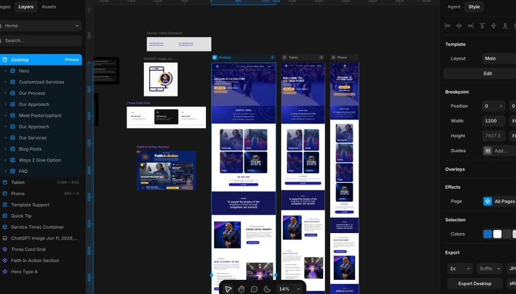
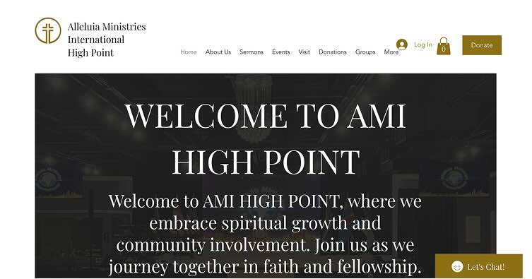
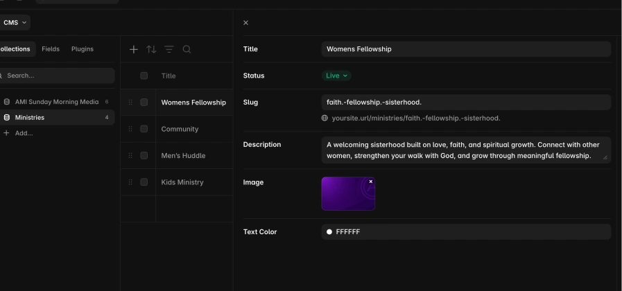
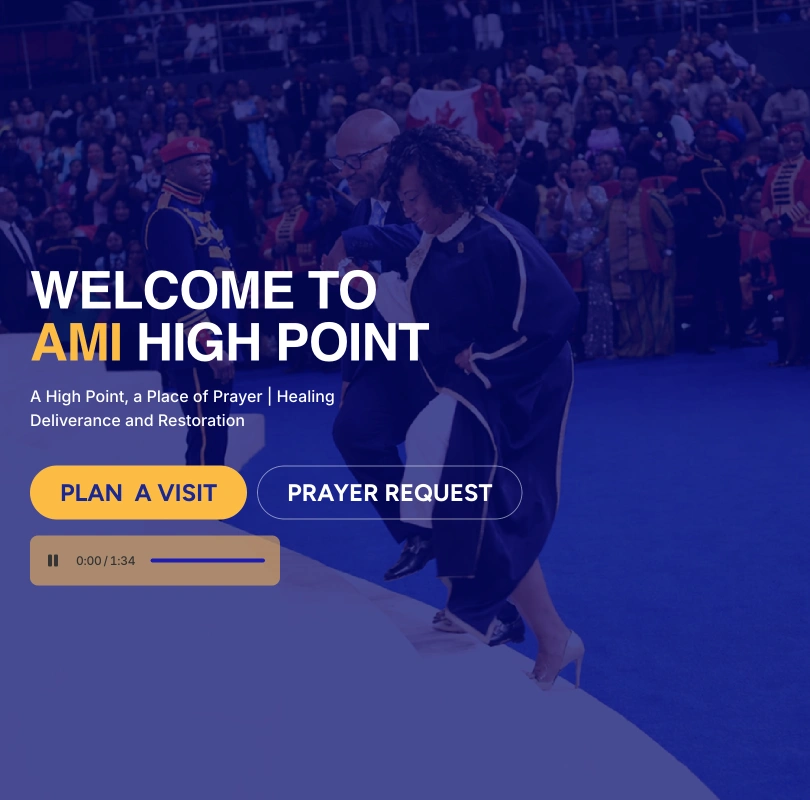
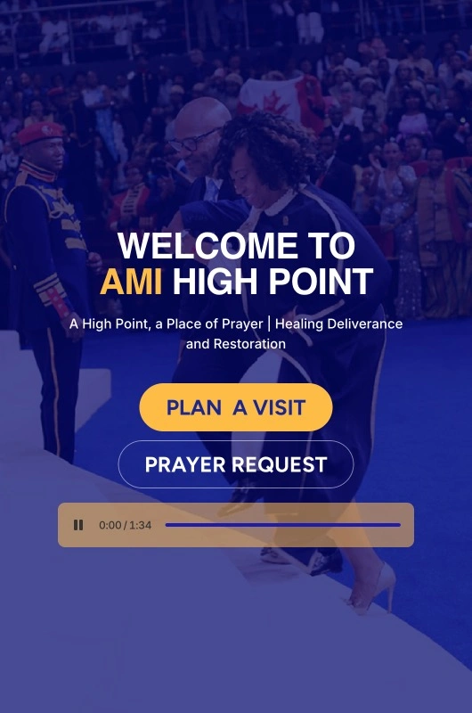
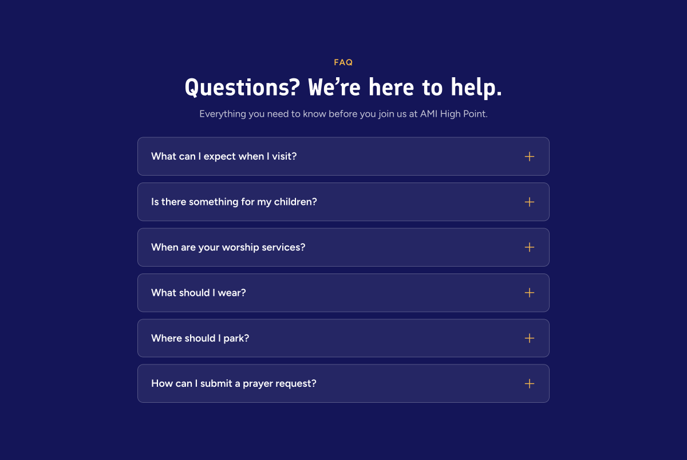
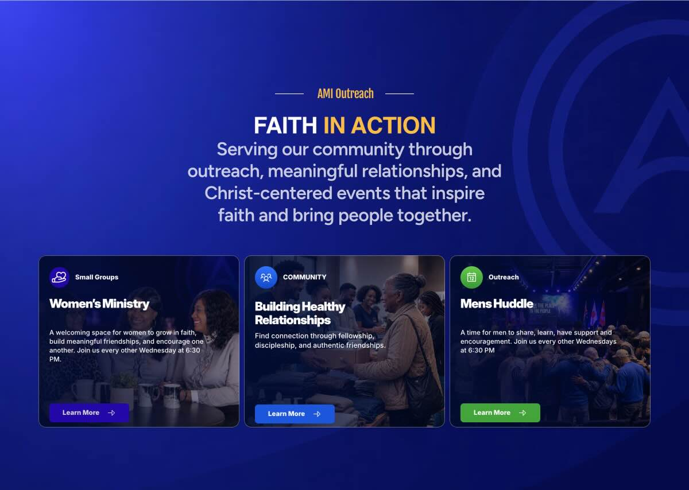
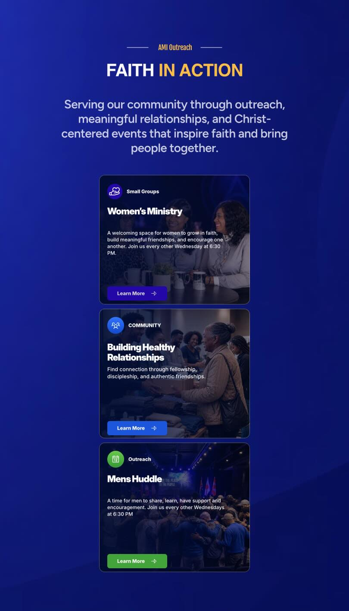

Issue
Before: Clicking the button produced no response, leaving users without confirmation that their action was received.
AMI Global · Web Operations
Website administration, CMS management, responsive QA, troubleshooting, and digital production for a growing organization.

Role at a glance
I connected responsive interface decisions with reusable components, structured content, and ongoing QA—creating an experience that served visitors and remained practical to maintain.
01 · Project overview
AMI needed a website built for frequent updates, donor communication, multiple audiences, and reliable use across devices.

02 · How I worked
I balance stakeholder needs, reusable production, and careful QA so each update is useful now and maintainable later.
Clarify the request, audience, content needs, and publishing constraints before starting the build.
Create reusable CMS components, then test content, behavior, and responsive layouts across breakpoints.
Publish carefully, verify the live experience, and keep the system ready for future updates.
Request aligned → reusable build → responsive QA → verified release → ongoing iteration

03 · CMS + web operations
Ongoing management kept content, publishing, reusable sections, and maintenance moving as website needs evolved.
04 · Responsive + QA



05 · Troubleshooting
Before: Clicking the button produced no response, leaving users without confirmation that their action was received.
After: The button was centered for a clearer user experience, and the request returned a successful 200 response, confirming that the interaction worked.
Problem identified → cause isolated → fix applied → live experience verified
06 · Outcome
Responsive components and structured CMS collections keep content consistent, simplify future updates, and help visitors find what they need.



FAQ support and one reusable service component shown across desktop and tablet.